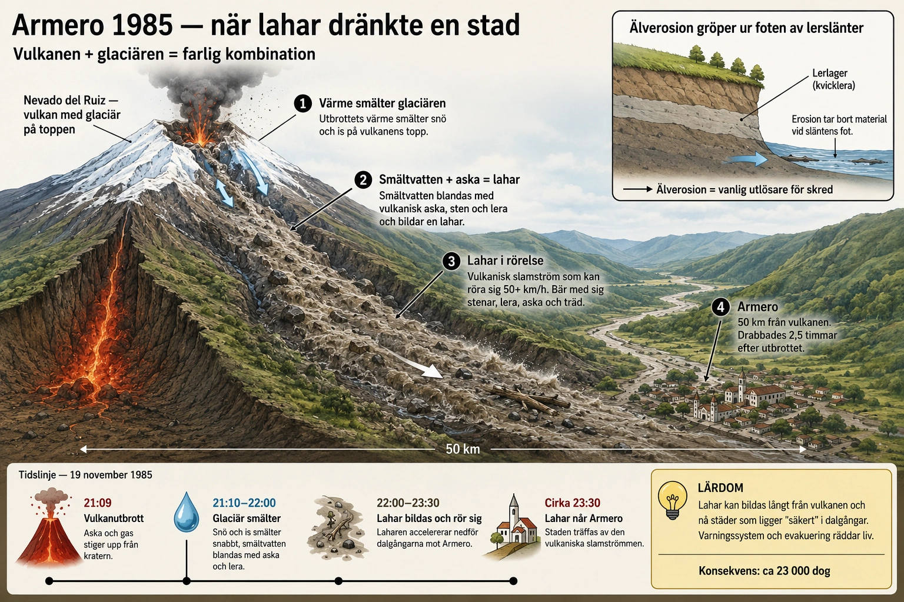

En stad i Anderna
Armero var en lugn jordbruksstad i centrala Colombia. Med ungefär 29 000 invånare låg den i Tolima-provinsen, i en bred dalgång omgiven av frodiga ris- och kaffefält. Staden hade existerat i hundratals år. Floden Rio Lagunilla rann genom området och bevattnade åkrarna. Långt i fjärran, 50 kilometer bort, reste sig en snöklädd bergsmassa — Nevado del Ruiz, "den vita jätten". För de flesta av Armeros invånare var vulkanen bara en vacker silhuett vid horisonten, något man knappast tänkte på.
Natten till den 14 november 1985 förändrades allt. Inom 30 minuter dränktes 80% av staden under upp till 12 meter lera och sten. 23 000 människor dog. Av stadens 29 000 invånare överlevde endast 6 000. Det blev en av 1900-talets värsta naturkatastrofer — och en av historiens tydligaste exempel på att geologisk kunskap räddar liv bara om den når människorna i tid.
Nevado del Ruiz — den vita jätten
Nevado del Ruiz är en aktiv vulkan i de colombianska Anderna. Med sina 5 311 meter är den den näst högsta aktiva vulkanen i Anderna. Toppen är permanent täckt av snö och glaciärer, vilket har gett vulkanen dess spanska namn — "Nevado" betyder "snöklädd".
Det är just denna kombination — en aktiv vulkan med stora ismassor på toppen — som gör Nevado del Ruiz extremt farlig. Om vulkanen får utbrott, även ett relativt litet sådant, kan värmen plötsligt smälta stora delar av glaciären. Då bildas det vi mötte i underdel 7C: en lahar, en vulkanisk slamström.

Vulkanen hade gjort exakt detta tidigare. Vid utbrottet 1595 dog flera hundra människor i lahar längs samma dalgångar. Vid utbrottet 1845 dog över 1 000 människor — också i Armero-området. Men 140 år är mycket lång tid i mänsklig erfarenhet. När 1985 kom hade både staden Armero och dess invånare glömt vad som hade hänt där tidigare. Den geologiska historien fanns dokumenterad i böcker, men inte i människors levande minne.
Varningarna som inte räckte
Detta är vad som gör Armero så tragiskt: det var inte en oväntad katastrof. Varningstecknen hade pågått i nästan ett år.
Redan i november 1984 — exakt ett år innan katastrofen — började Nevado del Ruiz visa tecken på vaknande. Mindre jordbävningar registrerades runt vulkanen. Gas- och askutsläpp ökade. Forskare från Colombia, USA och Italien började övervaka berget mer noggrant. Under 1985 producerades flera vetenskapliga rapporter som varnade för risken.
I oktober 1985, en månad före utbrottet, publicerades en riskkarta. Den visade tydligt vilka områden som hotades om vulkanen fick utbrott. Stora delar av Armero låg i "hög risk"-zonen. Kartan distribuerades till lokala myndigheter. Forskarna varnade att en evakuering kunde behövas.
Men evakuering är dyrt och politiskt obekvämt. Att flytta tusentals människor från sina hem — för en vulkan som inte hade haft utbrott på 140 år — verkade orealistiskt. Lokala myndigheter underskattade hotet. Ekonomiska intressen vägde tungt. Och vulkanen själv hade ju varit lugn i decennier — kanske var oron överdriven?
Den 13 november 1985
Sent på eftermiddagen började Nevado del Ruiz släppa ut mindre eruptioner av varma stenar och aska. Bekymret växte. Klockan 17 utfärdade vulkanövervakningsteamet en varning till regionala myndigheter. Klockan 19 sändes ett meddelande över lokal radio i området.
Men meddelandet var otydligt och lugnande. Radio sa att invånarna skulle "förbli lugna" och stanna hemma. Många i Armero hörde meddelandet, undrade om de skulle förbereda sig, men beslutade att vänta. Det var november, det regnade lite. Många gick och la sig vid normal tid.
Klockan 21:09 kom huvudutbrottet. Vulkanen kastade ut aska och varma stenar i en så kallad "pyroklastisk" eruption. Värmen smälte plötsligt stora delar av glaciären på toppen. Det smälta vattnet blandades med vulkanaska och stora mängder löst material i sluttningarna. Tre separata lahar-vågor bildades och började röra sig nedåt — varje våg i en av de tre dalsystem som ledde bort från vulkanen.
Den största laharen följde Rio Lagunilla — precis den flod som rann genom Armero. Den rörde sig med en hastighet av 40-50 kilometer per timme. Vid framkanten var den 12 meter djup. Den bar med sig stenblock så stora som bilar, hela träd och miljontals ton lera och aska.
När laharen nådde Armero
Klockan ungefär 23:30 nådde laharen Armero. Det var två och en halv timme efter utbrottet. Två och en halv timme då människor i staden hade kunnat varnas, evakueras, flytt. Men ingen visste vad som var på väg.
För invånarna i Armero kom katastrofen utan förvarning. Många sov. Andra såg på TV. Plötsligt började marken skaka — först som en svag vibration, sedan kraftigare. Ett dån som lät som ett tåg närmade sig från norr. Och så kom laharen, en mörk vägg av lera, sten och vatten, högre än husen, som svepte fram genom staden.
Inom 20 minuter var det över. 80% av Armero låg under 5-12 meter lera. Hus, vägar, fordon, träd — allt begravt. När solen gick upp den 14 november var staden som hade existerat kvällen innan helt borta. Det fanns inte längre någon stad där.
Bland tusentals offer fanns en 13-årig flicka vid namn Omayra Sánchez. Hon hade fastnat i ruinerna av sitt hem, med ben och armar inklämda under murverk och lera, halsen ovan vattennivån. I tre dagar kämpade hon för att överleva, samtidigt som räddningsarbetare gjorde vad de kunde — men hade inte utrustning att fri henne. Hennes ansikte och hennes ord blev en symbol för hela katastrofen — för de tusentals människor som dött eller dog som hon. Hon avled på den fjärde dagen.
Varför blev det så illa?
Det är detta som gör Armero till så viktig läsning. Det handlar inte bara om vulkanens kraft, utan om varför geologisk kunskap inte räckte fram till människorna. Fyra faktorer samverkade.
För det första: geografisk kunskap fanns men användes inte fullt ut. Riskkartan publicerades en månad före katastrofen. Den var detaljerad och korrekt. Men den nådde inte den vanliga invånaren i Armero. Många hade aldrig sett kartan, och visste inte att deras hus stod i "hög risk"-zon.
För det andra: politiskt motstånd mot evakuering. Att evakuera en hel stad kostar pengar, stör ekonomin och skapar politisk oro. Lokala myndigheter gjorde bedömningen att risken inte var tillräckligt akut för att motivera kostnaderna. När varningstecknen ökade i de sista veckorna saknades både resurser och vilja att vidta drastiska åtgärder.
För det tredje: kommunikationen misslyckades vid kritisk punkt. Mellan klockan 19 och 23:30 — när människor borde ha evakueras — fanns en otydlig kommunikation från myndigheterna. Lokal radio sa "förbli lugna". TV förmedlade inte tillräckligt akuta varningar. Den vetenskapliga oron översattes aldrig till en omedelbar varning som invånarna förstod.
För det fjärde: människor visste inte vad lahar var. De flesta i Armero hade aldrig hört ordet "lahar". De visste att vulkaner kunde släppa lava och aska, men inte att en glaciärtäckt vulkan kunde skicka en flod av lera tio meter djup som rörde sig 40 km/h. De saknade den geografiska grundkunskap som hade gjort dem rädda nog att fly på egen hand när varningarna kom.
Lärdomar för en hel värld
Armero blev en katastrof som förändrade vulkanforskning och katastrofhantering globalt. På bara några år efter 1985 utvecklades nya internationella samarbeten för att förhindra liknande tragedier.
USA:s geologiska undersökningsmyndighet (USGS) etablerade kort därpå sitt Volcano Disaster Assistance Program — ett team som kan skickas till länder med farliga vulkaner och hjälpa till med övervakning och evakueringsplaner. Programmet har sedan dess hjälpt att förhindra dödsfall vid flera vulkaner i Filippinerna, Indonesien, Ecuador och andra länder. Det är direkt inspirerat av Armero.
FN:s International Decade for Natural Disaster Reduction lanserades 1990 — också delvis i kölvattnet av Armero. Sedan dess har koppling mellan vetenskap, varningssystem och lokala samhällen blivit en central fråga inom katastrofhantering. Att forska om risken räcker inte; informationen måste nå hela vägen till människorna som lever i farozonen.
I dag finns det få vulkaner i världen där människor lever på samma risk-nivå som Armero hade 1985. Indonesien, Japan, Filippinerna, Italien, Mexiko, Ecuador, Colombia — alla länder med aktiva vulkaner har idag mer eller mindre fungerande övervakningssystem. När Mount Pinatubo i Filippinerna hade ett enormt utbrott 1991 — ett av århundradets största — var dödssiffran trots det "endast" cirka 800, eftersom evakueringen lyckades. Lärdomen från Armero hade översatts till handling.
Den geografiska principen
Armero illustrerar något fundamentalt om sluttningsprocesser, vulkaner och samhället: katastrofen är inte en enskild händelse, utan en lång kedja. Vulkanen var känd för att vara farlig. Lahar-risken var kartlagd. Varningarna fanns. Forskarna hade gjort sitt jobb. Men kedjan brast vid den sista länken — kommunikationen mellan kunskap och människa.
För geografi som ämne är detta en viktig poäng. Att veta var en risk finns är inte samma sak som att kunna agera på risken. Geologisk kartering, vulkanforskning, lahar-modellering — allt detta är värdefullt bara om kunskapen sprids dit den behövs. Och människor som lever i risk-områden behöver själva förstå tillräckligt om geografin för att kunna fatta egna beslut när varningar kommer.
Detta gäller inte bara vulkaner. Det gäller skredkartorna i västsverige. Det gäller lavinprognoserna i svenska fjäll. Det gäller översvämningsriskerna längs landets älvar. Geografisk kunskap är en samhällsresurs — men bara om den når människorna som behöver den.
Armero hade sina varningar. De räckte inte. Det är en lärdom värd att bära med sig — för geografin, för samhället och för framtiden.